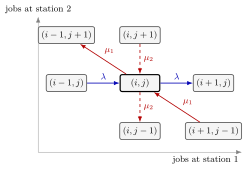

Jackson Product Form¶
Theorem¶
Consider an open network of stations in which external jobs arrive at station as a Poisson process with rate , routing is Markov with routing matrix , and station has servers with exponential service times of mean , all independent. Let solve the traffic equations and suppose every station is stable, . Then the stationary distribution of the numbers of jobs at the stations is the product of the station distributions (Jackson's theorem):
where is the stationary distribution of an isolated queue with arrival rate . For single-server stations, with , this is .
Interpretation¶
At any fixed moment, a stationary Jackson network looks as if each station were a separate queue fed at its traffic-equation rate , and the station contents are independent.

The figure reproduces the tandem transitions of Fig. 7.3.1. An arrival moves the state right (blue, ), a service completion at station 1 moves one job from station 1 to station 2 (red, ), and one at station 2 lets a job leave (red dashed, ). Three arrows leave and three enter it; with the three outflows equal the three inflows; together with the boundary states this proves the theorem for the tandem (Example 2).
The assumptions matter. Poisson arrivals and exponential service make the departures of a stationary station a Poisson process again (Exercise 7.3.2), which is how the notes decouple the stations of a tandem line; with general service times the notes only give approximations for tandem lines. Every load must be below one, since otherwise a station has no stationary distribution. Independence holds at one moment, not over time: a departure from station 1 is an arrival at station 2.
The notes motivate the result by following Poisson streams through the network. In a network with feedback the stream into a station is in general no longer Poisson, yet the product form still holds; the theorem is about the stationary joint distribution, not about arrival processes. A common slip is to use the external rate instead of in .
Key Results¶
- Marginals and tails. Each station alone has the law, so and , without summing over the other stations.
- Whole network. , and, by Little's law, .
- Departures of are Poisson (Exercises 7.3.1–7.3.2). A departure leaving the system empty is followed by an idle period and a service, with density ; conditioning on busy or idle gives .
- Proof for the tandem (equation (7.3.2)). satisfies the balance equations for ; Exercises 7.3.4–7.3.6 check the boundary states , and .
- Multi-server stations. The theorem holds for stations as well, with the distribution as factor.
Examples¶
1. Joint and tail probabilities in a tandem. Jobs arrive at per hour at two stations in tandem with and hours, so and . Then and . The probability of more than two jobs at station 1 is , whatever station 2 holds.
2. Checking balance. In Example 1, and . At the interior state , and the outflow is . The inflow is . At only an arrival leaves and only a service at station 2 enters (Exercise 7.3.4): and .
3. A network with feedback. For the two-station network of the traffic equations page, with , and hours, the loads are . The product form gives and . The means are and , so with a job spends hours in the network. Using instead of would give and badly understate the congestion at station 1.
Prerequisites¶
Related Concepts¶
- M/M/c Queue
- Tandem Queue
- Visit Ratio
- Closed Queueing Network
- Arrival Theorem
- Mean Value Analysis
- Independent Random Variables
Sources¶
- Stochastic Operations Research · Week 7
- N. D. van Foreest, Sample Path Analysis and Simulation of Stochastic Systems, Section 7.3
Aliases: Jackson's theorem, product-form solution, product form of Jackson networks, Jackson network product form Keywords: p(n_1, ..., n_M) = \prod_i (1-\rho_i)\rho_i^{n_i}, product form, stationary joint distribution, independent stations, M/M/1 stations in tandem, Burke departures Poisson, balance equations, open network of M/M/c stations Symbols: gamma, lambda, mu, product, rho, sum
Last updated: 29 October 2026 20:42
Jackson Product FormOpen Queueing NetworkTraffic EquationsBalance EquationsM/M/1 QueueM/M/c QueueTandem QueueVisit RatioClosed Queueing NetworkArrival TheoremMean Value AnalysisIndependent Random Variables